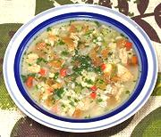

|
Chicken Soup with RiceBrazil - Canja de Galinha | ||||
| Serves: Effort: Sched: DoAhead: |
8 soup ** 4 hrs Yes |
This Chicken Stew is popular throughout Brazil, Portugal and Cape Verde off the west coast of Africa. It is, of course, made in endless variations. | |||
|
2 ------ 1 7 2 1 4 1/4 1/2 1/4 ------ 6 1/2 1/3 1/3 1/2 1/4 |
# --- # oz # cl c t t --- c c c c t t |
Chicken Meat (1) -- Marinade Tomatoes Bell Pepper red Chili Serrano (2) Onions Garlic Lemon Juice (3) Salt Pepper -------- Water (4) Rice (5) Cilantro Parsley, flat Salt Pepper, black |
Prep - (3-1/4 hr - 20 min work)
|